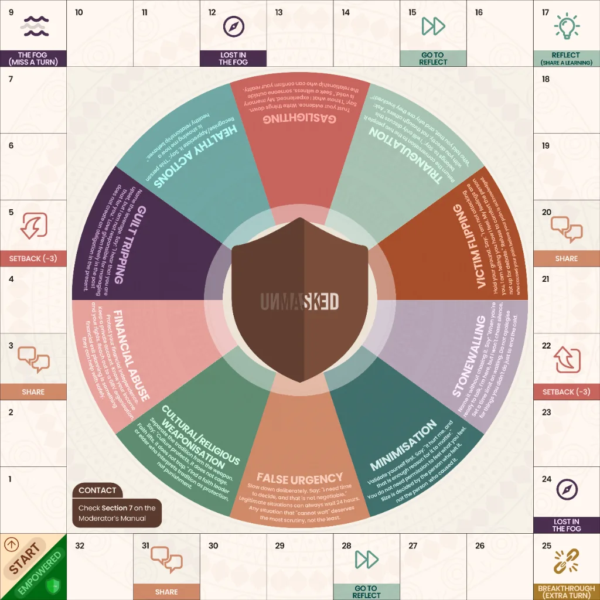

Normalised Relation Abuse awareness, through playWhat cannot be namedcannot be challenged.
Unmasked gives communities the language.
Normalised Relation Abuse in African communities is not a secret. It is a silence. Not because people have not seen it, but because they do not yet have the words.
Unmasked changes that.

The reality
1 in 3
women in Nigeria has experienced physical or sexual violence from a partner. The emotional and psychological forms are far more widespread, and far less named.
68%
of cases go unpunished in communities across Nigeria. This is because most people cannot name these abusive tactics.
0
other facilitated behaviour change programmes in Nigeria teach communities to recognise and name ten of these tactics, through play, with clinical grounding, at scale.
“The problem is not that people don't care. It's that they don't have the language.”
What we are
A behaviour change system.
Delivered through play.
Unmasked is a facilitated game-based programme that teaches communities to recognise and name the tactics of Normalised Relation Abuse, so they can challenge them.
It is not a helpline. Not a therapy session. Not a campaign.
It is a structured experience that gives communities something more powerful than awareness: language.
Clinically grounded
Developed with clinical review. Every tactic category in the Shield taxonomy is evidenced, named, and explained by professionals in the field.
Trauma-informed
Designed to create safety, not distress. The Unmasked facilitation method and Moderator's Manual are built around psychological safety at every step.
Built for scale
A franchise architecture means Unmasked can be adapted for any community, faith groups, workplaces, schools, NGOs, without losing the integrity of the core system.
How it works
From a room full of people to a community with language.
- 01
A facilitator sets the space
A facilitator opens the session with the Opt-Out Protocol, establishing safety, confidentiality, and the rules of honest conversation.
- 02
Scenarios are read aloud
Cards from the scenario deck are drawn and read to the group. Each describes a real, recognisable situation. Players vote: is this abusive, or is it healthy?
- 03
The group names the tactic
After voting, the active player names the specific tactic they believe is at work. Gaslighting. Guilt Tripping. Stonewalling. The Shield taxonomy gives the language.
- 04
The explanation is read
The facilitator reads the card's explanation aloud, regardless of whether anyone got it right. This is the learning moment. It happens on every turn, without exception.
- 05
Grey cards test discernment
Not everything that looks like abuse is abuse. Grey cards present ambiguous scenarios, teaching communities to think critically, not just reactively.
- 06
Communities leave with language
By the end of a session, participants can name what they could not name before. That naming is the first act of change.
The Shield taxonomy
Ten categories.
One shared language.
The Shield is the taxonomy at the heart of Unmasked, ten categories of Normalised Relation Abuse, each with a name, a definition, and a set of real-world scenarios. These are the words communities leave with.
- Tactic 01
Gaslighting
It makes you doubt what you know to be true.
- Tactic 02
Triangulation
It makes you feel outnumbered in your own relationship.
- Tactic 03
Stonewalling
It uses silence as a weapon to make you desperate.
- Tactic 04
Victim Flipping
It turns your hurt into an attack on them.
- Tactic 05
Minimisation
It tells you your pain is too small to matter.
- Tactic 06
Financial Abuse
It removes your ability to leave by removing your access to money.
- Tactic 07
Cultural & Religious Weaponisation
It uses what you love and respect to silence you.
- Tactic 08
Guilt Tripping
It converts your love into a debt you can never repay.
- Tactic 09
False Urgency
It stops you thinking clearly by pretending there is no time to think.
- Tactic 10
Healthy Boundaries & Actions
This is what it looks like when someone respects themselves and you.
These are the first ten. More categories will be added in future editions of Unmasked as the programme expands across new community contexts.
Built for every community
One system.
Many worlds.
Unmasked is a franchise system. The core game and methodology remain constant, but each edition is adapted for the specific language, relationships, and dynamics of a community context.
Origins
For open community groups, NGO programmes, and any gathering where the doors are open to everyone.
Now available
To Love & To Hold
For married couples, marriage preparation programmes, and marital organisations navigating long-term relationship dynamics.
In development
What Are We
For young adults and unmarried couples navigating the complicated early terrain of modern relationships.
In development
This Can't Be God
For faith communities where culture, tradition, and scripture are sometimes used to silence harm.
In development
Just Another Monday
For workplaces, HR teams, and organisations addressing Normalised Relation Abuse dynamics in professional contexts.
In development
For The Timeline
For digital-native communities navigating Normalised Relation Abuse in online spaces.
In development
Who Unmasked is for
Whoever your community is, Unmasked can reach them.
NGOs, corporates, faith bodies, schools
Bring the Unmasked programme to your community or team. We partner with you to choose the right edition, provide facilitator training, and measure impact.
Individuals who have played or want to play
Ready to dive deeper? Find an upcoming session near you, or learn how to bring the Unmasked experience to your own circle.
Anyone who believes in the mission
Support our mission to end harm. Join the Unmasked community by sharing our message, following the campaign, and spreading the word.
Where we are
Pre-revenue. Post-validation. Building toward scale.
Unmasked is a validated product concept at the beginning of its journey. The game has been designed, clinically reviewed, and tested. The franchise architecture is built. The first Founding Partner pilot sessions are underway.
We are not yet everywhere. But we know what we are building, and why it matters.
Clinically reviewed
The Shield taxonomy and all 100 scenario cards have been reviewed by a clinical psychologist. The trauma-informed facilitation method has been designed and tested against clinical best practice.
100 scenario cards
The Unmasked scenario bank contains 100 cards across 10 tactic categories; 63 Red (abusive), 27 Grey (ambiguous), and 10 Green (healthy). Every card has been clinically reviewed.
Built for African communities
Unmasked is African-built, African-named, African-contextualised. Every scenario, every tactic explanation, every facilitation protocol has been written for the communities it serves.
The language starts here.
Normalised Relation Abuse in African communities persists because it goes unnamed. Every person who learns these ten words makes their community a little safer. Join the Unmasked community, stay connected, share the language, and be part of the change.
You're in.
Thank you for joining the Unmasked community. We will be in touch by email and WhatsApp with advocacy content and session announcements.
Your email app should now be open with your details addressed to hello@unmasked.ng. Press send and we will be in touch by email and WhatsApp with advocacy content and session announcements.
From the Insight section
Research, advocacy, and the work in the field.
Questions about Normalised Relation Abuse and Unmasked
What is Unmasked?
Unmasked is a facilitated, game-based behaviour change programme from Nigeria. Trained facilitators guide groups through scenario cards so participants learn to recognise and name the ten tactics of Normalised Relation Abuse, such as gaslighting and financial abuse. It is not a helpline, a therapy session or a campaign: it gives communities language.
What is Normalised Relation Abuse?
Normalised Relation Abuse is harm in relationships that has become so familiar it goes unnamed: in families, marriages, churches, offices and friendships. Unmasked groups it into ten tactics, including gaslighting, triangulation, stonewalling and guilt tripping. Naming the tactic precisely is the first step to recognising it and challenging it.
How does an Unmasked session work?
A facilitator opens with the Opt-Out Protocol to establish safety and confidentiality. Scenario cards are read aloud, everyone votes at the same moment on whether the situation is abusive or healthy, and the active player names the tactic. The facilitator reads the explanation aloud on every turn, and the session ends with a Closing Ritual.
Is Unmasked a helpline or therapy?
No. Unmasked is an education programme, not a crisis service and not a therapeutic intervention. It builds the language people need to recognise harm, and every participant receives details of local support organisations before they leave. If you or someone you know is in immediate danger in Nigeria, call 112.
Who can bring Unmasked to their community?
NGOs, companies, faith communities, schools, government institutions and community groups can commission a programme. Options run from a single two to three hour Community Edition session to an Enterprise Programme of twelve to thirty sessions. Send an enquiry and we reply within 48 hours with a recommendation and a proposal.